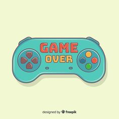

JOGOS DE VIDEO GAME
História do Video Game

Os primeiros videogames fabricados no Brasil foram no estilo Pong, no final dos anos 70. Cabe o título de primeiro console fabricado e distribuído no Brasil ao TVBol, um pequeno PONG de quatro jogos fabricado no Rio de Janeiro em 1976, logo depois outros Pongs chegaram ao mercado como os mais bem sucedidos Telejogo1 e Telejogo2 da Philco/Ford, além deles foram lançados o TvJogo3 e TVjogo4 da Superkit e o Videorama fabricado em Porto Alegre.
Em 1987 era fundada a Tectoy que mesmo sendo uma empresa jovem ganhou a concorrência contra a Gradiente para a representação oficial da Sega no Brasil, com isso a Tectoy virou a importadora do Master System. As ações de marketing da Tectoy inclui além de comerciais nacionais de televisão e revistas, um pequeno programa diário chamado Master Dicas (posteriormente Sega Dicas) na Rede Globo.
O Master System no Brasil chegou a dominar 85% do mercado sobre os concorrentes (maior parte deles Famiclones), na verdade, o Brasil foi o único país onde o Master System ganhou do NES. A Tectoy também modificou vários jogos como o da Turma da Mônica, Chapolim, Pica-Pau e Ayrton Senna.
Futuramente a Gradiente junto com a Estrela criaria a Playtronic que representou a Nintendo no Brasil.
E pode encontrar mais informações sobre Jogos de Video GameJogos.wink
JOGOS ANTIGOS
Videogames tiveram um papel de protagonista na infância de diversos dos adultos de hoje em dia. Consoles como Super Nintendo, Mega Drive, Nintendo 64 e PlayStation foram um enorme sucesso e marcaram época com seus excelentes games, guardados com carinho na memória dos jogadores. Para celebrar o Dia da Criança, o TechTudo preparou uma lista com alguns dos clássicos que despertam nostalgia nos fãs.
Super Mario Word

Super Mario World Bonito, divertido e muito desafiador, Super Mario World é lembrado até hoje como um dos principais jogos de sua geração. O título estava presente em todos os Super Nintendo vendidos e era obrigatório para todos os fãs de games de plataforma com suas quase cem fases e diversos truques e segredos.
STREET FIGHTER 2

Principais títulos de luta da geração 16-bit, os games de Capcom e Midway marcaram época com seus estilos de jogo carismáticos e competitivos que inspiram novos lançamentos até os dias de hoje, quase 30 anos depois de sua chegada. Seja nas locadoras ou na casa dos amigos, ambos estavam sempre entre os mais jogados graças às partidas rápidas e dinâmicas. Decorar as combinações de botões para combos, Hadoukens e os violentos Fatalities também era uma verdadeira febre.
CRASH BANDICOOT
O mascote da Naughty Dog chegou com a popularização do PlayStation por aqui e, rapidamente, se tornou um dos games favoritos dos donos do aparelho. Os cenários coloridos e tridimensionais chamavam a atenção, assim como o elevado nível de dificuldade de algumas de suas fases.
Voce pode encontrar mais informações sobre Jogos Antigos em Techtudo Jogos